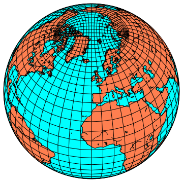
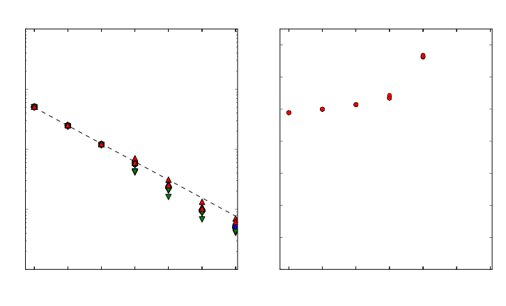
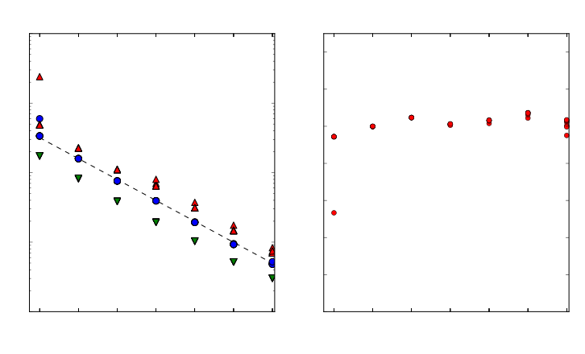

An Overview of MOM
Marshall Ward
National Computational Infrastructure
MOM summary
Geophysical Fluid Dynamics Laboratory (GFDL)
- Bryan-Cox model
- Hydrostatic Boussinesq dynamics
- Horizontal finite difference solver
- Vertical convective adjustment
- Arakawa B-grid for nonlinear conservation
- Viscous parameterisation of turbulence
History of MOM
- 1984: "Cox code"
- First public release
- 1991: MOM 1
- Fortran 77, POP fork
- 1996: MOM 2
- "Memory window" parallelisation
- 1999: MOM 3
- Explicit free surface (no elliptic solver)
- 2004: MOM 4
- Domain decomposition (HIM), generalised grids
- 2012: MOM 5
- Public, open source release
Basic equations of motion
Mostly a hyperbolic PDE with constraints
$$ \begin{align} p_z &= -g \rho \\ \mathbf{u}_t + \mathbf{u} \cdot \nabla \mathbf{u} + w \mathbf{u}_z + f \hat{z} \times \mathbf{u} &= -\tfrac{1}{\rho} \nabla p + \mathcal{F} \\ \phi_t + \mathbf{u} \cdot \nabla \phi + w \phi_z &= \mathcal{F}_\phi \ (\phi \in T, S, \ldots) \\ \nabla \cdot \mathbf{u} + w_z &= 0 \\ f(\rho, T, S, ...) &= 0 \end{align} $$But there are a lot of additional terms and forcings
FMS: Flexible Modeling System
Framework for MOM and SIS development
- Abstraction of common operations
- Communication (MPI, SHMEM, serial)
- Diagnostics
- IO (NetCDF)
- Coupler field exchange
- Time and calendar management
Principles of MOM
Arakawa grids
MOM uses B-grids (and some C-grids)
Generalised orthogonal coordinates
Generalised grids require $\Delta x$ arrays
$z^*$ vertical grid

Improved free surface dynamics
Barotropic/baroclinic split timesteps
TODO: Explain this (and move?)
Building MOM
MOM source code
MOM is publicly available and hosted on github:
git clone https://github.com/BreakawayLabs/mom.git
- Scientific maintainer: Stephen Griffies (GFDL)
- Repository maintainer: Nicholas Hannah (UNSW)
MOM drivers
- MOM_solo
- Ocean-only
(src/mom5/drivers/ocean_solo.F90) - MOM_SIS
- Ocean-Sea Ice
(src/coupler/coupler_main.F90) - CM2M
- GFDL CM2 coupled model
- ACCESS-CM
- ACCESS coupled climate model
Build configuration
Makefiles are generated by GFDL's mkmf tool.
environs.<platform>- Software stack (e.g. modules)
mkmf.template.<platform>- Compiler settings and flags
We use the nci platform
Compilation
Use the MOM_compile.csh script:
cd exp
./MOM_compile --type MOM_SIS --platform nci
${CODEBASE}/exec/${platform}/${type}/fms_${type}.x
Using MOM
Experiment layout
./(top-level directory)- Configuration files (namelists, etc.)
./INPUT/- Grid data, forcings, input restarts
./RESTART/- Output restart files (initially empty)
Configuration files
Four basic configuration files:
input.nml- Main configuration namelist
diag_table- Diagnostic fields and output rates
data_table- External data sets (boundary conditions)
field_table- Supplemental configuration
Grid setup
We use the new mosaic system
grid_spec.nc: Top-level mosaic fileocean_mosaic.nc: submodel mosaic fileocean_hgrid.nc: Horizontal gridocean_vgrid.nc: Vertical grid (MOM-only)ocean_topog.nc: Ocean bathymetryland_mask.nc,ocean_mask.ncatm_ocean_mosaic_tile1Xocn_ocean_mosaic_tile1.nc
input.nml overview
TODO (this is long)
MOM communication
Point-to-point
mpp_send- Queues and calls
MPI_Isend mpp_recv- Queues and calls
MPI_Recv mpp_sync_self- Calls
MPI_Waitfor queued requests
Buffered calls are optional, and messages can be combined
(See src/shared/mpp/mpp_transmit.inc)
Point-to-point example
if (myid_y < size_y) then
do ii = myid_y + 1, size_y
call mpp_send(psiu2(isc:iec), lenx, pelist_y(ii))
end do
end if
call mpp_sync_self()
if(myid_y > 1) then
do ii = 1, myid_y - 1
call mpp_recv(psiu2(isc:iec), lenx, pelist_y(ii))
do i=isc, iec; do j=jsc, jec
psiu(i,j) = psiu(i,j) + psiu2(i)
end do; end do
end do
end if
Collectives
- mpp_sum
- Sum over ranks
- mpp_max
- Maximum value over ranks
- mpp_min
- Minimum value over ranks
Wrappers to MPI_Allreduce
Collective example
! Calculate total potential energy
pe_tot = 0.
do k= 1, nk
do j = jsc, jec
do i = isc, iec
pe_tot = pe_tot + Grd%dat(i, j) * Thickness%dzt(i, j, k) &
* Dens%rho(i, j, k, taup1) * Grd%tmask(i, j, k) &
* Thickness%depth_zt(i, j, k) * grav
end do
end do
end do
call mpp_sum(pe_tot)
Other comms
mpp_global_field- Gather global scalar or vector field onto rank
mpp_chksum- Call
mpp_sumas 8-byte integer recast
Generic interfaces
Interfaces have been provided for all scenarios
- Scalars and vectors (2d, 3d, 4d, 5d)
- Integers, reals, and complex types
- 4 and 8 bytes
Internal stacks
Most mpp operations use an internal stack.
- mpp_domains_set_stack_size
- Manually set the stack size
MOM automatically sets this, but SIS does not
MOM grids
Grid domain decomposition

Layout configuration
TODO: go over input.nml
Halo update

Grid indexing
- Global domain
isg, ieg, jsg, jeg- Compute domain
isc, iec, jsc, jec- Data domain
isd, ied, jsd, jed- Memory domain
ism, iem, jsm, jem
Grid API
mpp_define_domains- Set up the domain decomposition
mpp_get_data_domain- Get data domain indices
mpp_get_compute_domain- Get compute domain indices
mpp_update_domains- Stage a halo update
Domain API example
call mpp_define_domains([1, 100], 2, domain, pelist, halo=2)
call mpp_get_global_domain(domain, isg, ieg) ! isg, ieg = -1, 102
call mpp_get_data_domain(domain, isd, ied) ! isd, ied = -1, 52
call mpp_get_compute_domain(domain, isc, iec) ! isc, iec = 1, 50
allocate(a(isd:ied))
do i = is,ie
a(i) = <perform computations>
end do
call mpp_update_domains(a, domain)
Tracer advection
Tracer scaling

Tracer fields
Temperature, salinity, submerged time ("age"), ...
update_ocean_tracerhorz_advect_traceradvect_tracer_mdppmppm_limit_sh
vert_diffuse_implicitsend_tracer_diagnostics
Tracer advection
MDPPM tracer advection

PPM limit

Implicit vertical diffusion

Tracer diagnostics

Pre-barotropic acceleration
Acceleration scaling

Acceleration call tree
ocean_explicit_accel_abih_frictionpressure_forcehorz_advection_of_velocityvert_advection_of_velocitymomentum_source
Biharmonic friction

Pressure

Horizontal momentum advection
Vertical momentum advection

Momentum sources

Vertical mixing
Vertical mixing coefficient
Vertical mixing call tree
- vert_mix_coeff
- vert_mix_kpp_mom4p1
- vert_mix_tidal
KPP vertical mixing
Tidal mixing

Submesoscale
Submesoscale restratification
Submesoscale call tree
- submeso_restrat
- compute_submeso_skewsion
- compute_psi
- compute_bldepth
Submesoscale skew diffusion

Mesoscale streamfunction
Boundary layer depth

Submesoscale theory
- Parameterises the restratification by mesoscale eddies
Barotropic timestep
Barotropic update scaling
Barotropic call tree
- update_ocean_barotropic
- pred_corr_tropic_depth_bgrid
Tropic depth predictor/corrector

Barotropic solver
- Predictor-corrector (Euler) timesteps
- 80 barotropic steps per ocean (baroclinic) step
- Halos updated every 10 BT timesteps
- 42 halo updates per ocean step
Basic equation: $$\begin{align} \rho_o \left(\partial_t + f \hat{z} \times \right) \mathbf{U} &= \mathbf{G} - \left( H + \eta \right) \nabla \left( \rho_a + \rho_0 g \eta \right) \\ \eta_t &= - \nabla \cdot \mathbf{U} \end{align}$$
All the rest
Density update

Implicit acceleration
U-cell thickness update

Ocean surface smoothing

Ocean surface smoothing
- Required to remove B-grid null mode
- Using biharmonic, Laplacian is recommended
- C-grid doesn't need this
Basic filtering: $$\eta_{n+1} = -\nabla^4 \eta_n$$
Shortwave radiation source
Velocity update

Velocity advection

T-cell thickness update

Density diagnostics
Surface boundary conditions

General diagnostics

Miscellaneous
Diagnostics
- register_diag
- ...
Internal profiler
TODO: mpp_clock stuff
Bit reproducibility
- Point-to-point is reproducible
- Collectives are not on default
- Model configuration
TODO
- Compilation:
--align all